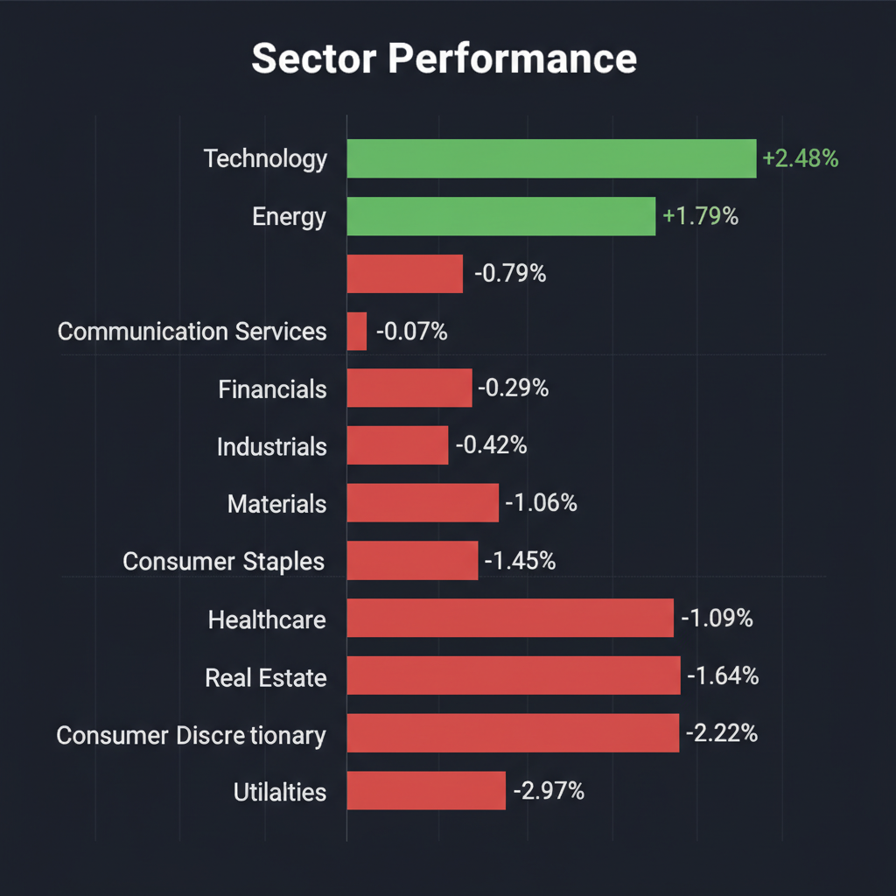
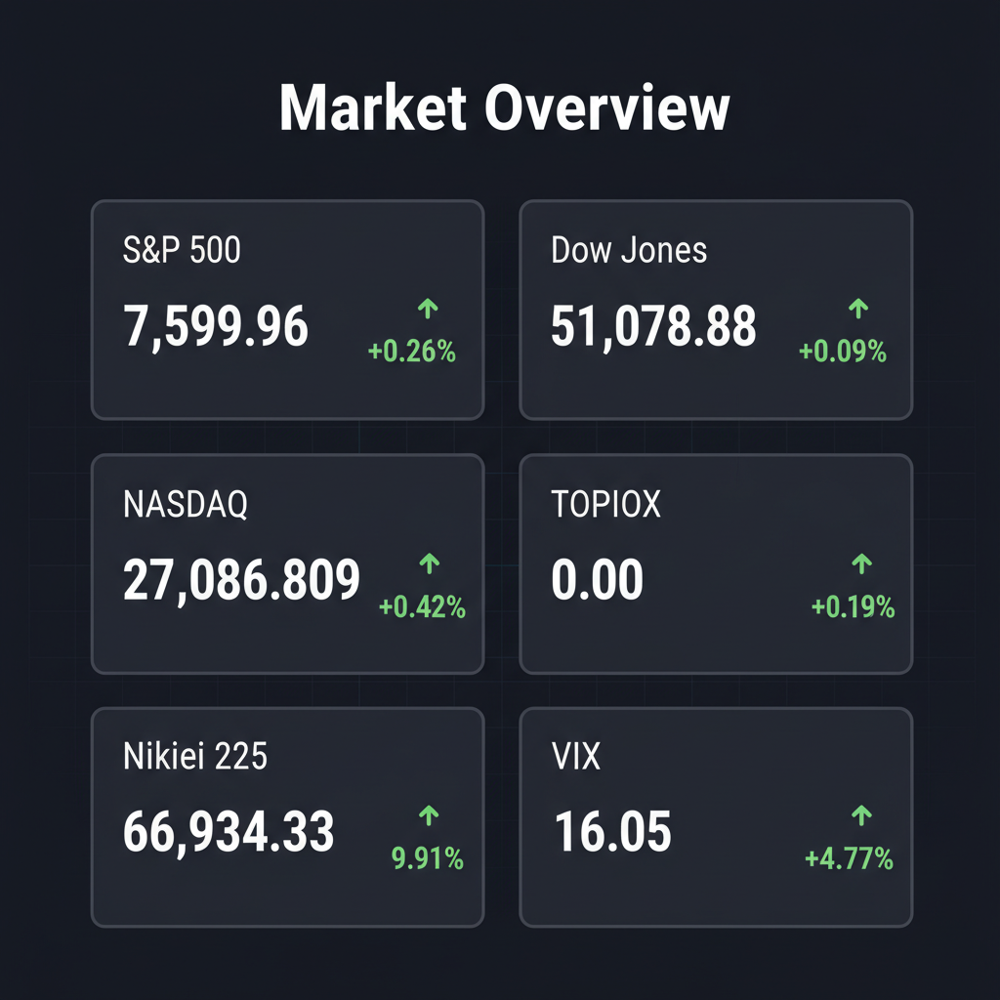

各エージェントがWeb調査結果を踏まえて独立に10段階評価した結果です。平均7以上=強気、4〜6.9=中立、4未満=弱気。
| 銘柄 | ファンダメンタルズアナリスト | テンバガーハンター | マクロエコノミスト | テクニカルストラテジスト | リスクマネージャー | 平均 | 判定 |
| 6845.T | 7 業績堅調、高値圏だが押し目買い妙味 | 8 高値更新、AI・省力化需要で成長続く | 8 業績好調、高値圏だがモメンタム強い | 8 高値更新、AI・省エネ需要で強固 | 8 高値更新、インフレヘッジとして魅力 |
7.8 | 強気 |
| 8022.T | 8 最高益更新、増配、割安感で買い | 7 最高益更新も調整、割安感強まる | 7 業績堅調、増配も割安感あり | 7 最高益更新も調整、割安感強まる | 7 最高益更新も株価調整、割安感増す |
7.2 | 強気 |
| FDX | 6 スピンオフ後の本体動向を見極め | 7 スピンオフ後も最高値更新、JPM格上げ | 7 スピンオフで本体の先行き懸念 | 5 Freight分離後、競争激化懸念 | 4 スピンオフで本体リスク増大、様子見 |
5.8 | 中立 |
| CRDO | 2 顧客集中リスクと高バリュエーションで警戒 | 2 顧客集中リスクと高バリュエーション、警戒 | 2 顧客集中リスクと割高感で警戒 | 2 顧客集中リスクと高PER、決算後急落 | 2 顧客集中リスク、決算後急落で警戒 |
2 | 弱気 |
| HCAC | 1 SPAC特有のボラティリティと開発リスク | 1 SPAC合併も急落、リスク高すぎ | 1 SPAC銘柄、開発リスク高く見送り | 2 SPAC、未成熟技術、直近株価暴落 | 1 SPAC、技術未確立、ボラティリティ高 |
1.2 | 弱気 |
エージェントが推奨した中小型株について、Google検索で最新情報を調査した結果です。
Credo Technology Group Holding Ltd (CRDO)に関する最新の投資判断情報は以下の通りです。
1. 企業概要 Credo Technology Group Holding Ltd（CRDO）は、データセンターおよびAIインフラ向けに、高速かつ電力効率の高い接続ソリューションを提供する半導体企業です。主な事業内容は、集積回路（IC）、アクティブ電気ケーブル（AEC）、光デジタルシグナルプロセッサ（光DSP）、SerDesチップレットなどの製品の設計・販売、およびSerDes IPのライセンス供与です。本社はケイマン諸島にありますが、実質的な開発拠点は米カリフォルニア州サンノゼです。
時価総額は2026年5月29日時点で378億ドルです。業界においては、ハイパースケール・データセンター、5G通信、AI、高性能コンピューティング（HPC）向けに高速な有線接続ソリューションを提供しており、AIインフラにおける主要なプレイヤーとして位置づけられています。特に、AECは光通信に比べて故障率が低く、電力効率に優れている点が強みとされています。
2. 直近の業績・決算情報 最新の決算は2026年度第4四半期（Q4）のもので、EPSおよび売上高はいずれも市場予想を上回る好調な結果でした。 * 2026年Q4のEPS: 1.16ドル（市場予想を13.73%上回る） * 2026年Q4の売上高: 4億3,700万ドル（前年同期比157%増、市場予想を1.21%超過） * 非GAAPベースの売上総利益率: 68.3% * 2026年度通期の売上高: 前年比206%増の13億4,000万ドルに到達 * 現金および短期投資残高: 14億ドル（強固な財務基盤を維持）
しかし、好決算にもかかわらず、決算発表後に株価は時間外取引で約11.53%〜14%下落しました。これは、成長モメンタムの鈍化に対する市場の警戒感や、サプライチェーンの制約、バリュエーション水準への懸念が背景にあるとみられています。
3. 最新ニュース・材料 * 2026年5月に発表された2026年度第4四半期決算では、EPSと売上高が予想を上回ったものの、株価は下落しました。 * 2027年度（FY27）の収益成長率が80%超、収益額が24億ドル超に達するとの見通しを示しています。 * 光学セグメントの力強い成長が期待されており、ディスクリート光学DSP、SiPho PIC、ZeroFlap Opticsの各セグメントがそれぞれ1億ドル超の売上高を貢献する見込みです。 * AIデータセンターインフラの急拡大を背景に、AEC（Active Electrical Cable）や光DSPなどの高速接続ソリューションが記録的な需要を牽引しています。
4. アナリスト評価・目標株価 2026年6月1日時点のアナリストによるコンセンサス評価は「強気買い」です。13人のアナリストが「強気買い」、4人が「買い」、1人が「中立」と評価しています。 * アナリストの平均目標株価: 211.86ドル（2026年6月1日時点の株価から約10.24%下降すると予想） * 別の情報源では、2026年の目標株価は193.54ドルとされています。 * みんかぶの目標株価は161.29ドルで、「売り」と評価されています。
5. リスク要因 * 顧客集中度: 上位の顧客への売上依存度が高いことが最大のリスク要因です。過去には最大顧客からの需要予測の大幅な引き下げにより、株価が1日で約46%暴落した事例があります。FY25第4四半期では、最大顧客が売上の61%、次いで12%、11%と、上位3社への依存度が極めて高い状況が続いています。 * 在庫リスク: 急速な需要増に対応するための棚卸資産の急増は、もし主要顧客からの発注が鈍化した場合、大規模な在庫評価損につながるリスクをはらんでいます。 * 競合: BroadcomやMarvellのような資金力・製品ポートフォリオで勝る巨大企業との激しい競争に直面しています。また、PCIeリタイマー市場ではAstera Labsのような新興の競合も存在します。 * サプライチェーン: 半導体チップの製造を台湾のTSMC一社に大きく依存しており、地政学的リスクに晒されています。 * 市場の認識: AIデータセンターの通信が「光（Optical）に置き換わり、銅線（Copper）は終わる」という市場のナラティブが先行する中、CredoのAEC（銅線ベース）は故障率や電力効率の点で優位性を持つと主張されていますが、市場の誤解が株価に影響を与える可能性があります。
6. 株価の最近の動き 2026年5月26日時点の株価は215.84ドルです。直近の決算発表後（2026年5月）、売上・利益・ガイダンスの全てが予想を上回ったにもかかわらず、株価は約14%下落しました。これは市場の成長モメンタム鈍化への警戒感を示唆しています。過去52週高値は243.21ドルです。過去1か月間では、複数のアナリストが「買い」と評価しているものの、短期的には決算後の下落が見られます。中期的には株価は上昇トレンドと予想するアナリストも存在します。
ミズノ（8022.T）の投資判断に必要な最新情報は以下の通りです。
アズビル（6845.T）に関する投資判断に必要な最新情報は以下の通りです。
1. 企業概要 アズビル株式会社は、1906年創業の総合オートメーションメーカーです。ビルディングオートメーション（BA）、アドバンスオートメーション（AA）、ライフオートメーション（LA）の3つの事業セグメントを展開しており、自動空調制御やセキュリティシステム、工場・プラント向け制御システム、計測機器、住宅用空調システムなどを提供しています。特にBA事業が主要な収益源です。 2026年6月時点の時価総額は、約8,761.9億円から9,049億円の範囲にあり、米ドル換算で約52.9億ドルです。 業界においては、制御・自動化機器分野で高いシェアを持ち、エネルギー管理に強みを持っています。
2. 直近の業績・決算情報 2026年5月13日に発表された2026年3月期（日本基準）の連結決算では、以下の実績となりました。 * 売上高：2,989億3,000万円（前期比 -0.5%） * 営業利益：473億400万円（前期比 +14.0%） * 経常利益：487億6,000万円（前期比 +15.6%） * 最終利益（親会社株主に帰属する当期純利益）：385億6,500万円（前期比 -5.8%） * 1株当たり利益（EPS）：75.76円
2027年3月期（国際会計基準移行後）の連結業績予想は以下の通りです。 * 売上高：3,150億円（前期比 +5.4%） * 営業利益：497億円（前期比 +5.1%） * 経常利益：500億円（前期比 +2.5%） * 最終利益：353億円（国際会計基準移行のため前期との比較は表記されていません） 直近3ヶ月（2026年1-3月期）の連結最終利益は前年同期比29.6%増の158億円、売上営業利益率は19.9%に上昇しています。 過去12四半期は業績が改善傾向にあり、収益性も前年同期比で上向き、自己資本比率も高水準で安定しています。
3. 最新ニュース・材料 直近1-2週間（2026年5月下旬〜6月上旬）の主なニュースは以下の通りです。 * 2026年5月29日、アズビルの株価変動要因となる材料ニュースが掲載されました。 * アズビルの株価は過去2週間で10.06%上昇しており、買いシグナルを保持しています。 * 2026年5月28日には、【上場来高値更新】に関連する銘柄としてアズビルが報じられています。 * 2026年5月27日のレーティング週報では、アナリストが「最上位を継続＋目標株価を増額」しています。 * 2026年5月22日、第104期定時株主総会招集ご通知に関する開示が行われました。 * 2026年5月14日、自己株式立会外買付取引（ToSTNeT-3）による自己株式の取得結果について開示しました。 * 2026年5月13日の決算発表では、創業120周年記念配当予想及び2027年3月期の配当予想、並びに剰余金の配当（増配）に関するお知らせを開示しました。
4. アナリスト評価・目標株価 5人のアナリストによるコンセンサス評価は「買い」です。 平均目標株価は1,640円で、現在の株価から1.42%の上昇余地を示唆しています。 目標株価のレンジは最低1,500円（-7.24%）から最高1,850円（+14.41%）です。 別の情報源によると、株予報Proのコンセンサス目標株価は1,670円（乖離率0.45%）です。
5. リスク要因 * 競争: 産業オートメーション分野は競争が激しいと考えられます。アズビルは市場範囲を積極的に拡大し、デジタル変革戦略を強化しないと、統合ソリューションに対する顧客の需要が高まる中で、市場シェアを失うリスクがあります。 * 財務上の懸念: PBRが3.34倍と同業他社と比較して高く、純資産に対して株価が割高に評価されている可能性があります。 * その他財務情報: インタレストカバレッジレシオが397.6倍と健全であり、倒産リスクは低い（アルトマンZスコア9.69）と評価されています。 自己資本比率は76.1%、有利子負債倍率は3.91%です。
6. 株価の最近の動き 2026年5月29日の終値は1,662.50円でした。 株価は直近3日連続で上昇し、過去2週間で10.06%の上昇を記録しています。 過去10日のうち8日で上昇しており、短期および長期移動平均線が買いシグナルを保持しているため、ポジティブなトレンドを示しています。 出来高も株価の上昇とともに増加しており、これも良いテクニカルサインとされています。 52週高値は1,673.00円、52週安値は1,241.50円です（2026年5月29日時点）。 年初来高値は1,673.5円を記録しています。
FDX（フェデックス）に関する投資判断に必要な最新情報は以下の通りです。
フェデックスは、米国に本社を置く多国籍複合企業で、輸送、電子商取引、ビジネスサービスを専門としています。世界220以上の国と地域で事業を展開しており、主要な事業セグメントには、エクスプレス（速達輸送）、グラウンド（小口地上配送）、フレイト（貨物輸送）、サービスが含まれます。
* 時価総額: 2026年6月現在、約982.4億ドルです。 * 業界でのポジション: グローバルな配送サービスにおいて主導的な地位を確立しており、広範な航空・陸上ネットワークと速達能力を活用しています。 しかし、米国国内配送市場ではAmazonやUPSとの競争に直面しており、特に国内配送量ではAmazonに追い抜かれています。
2026年3月19日に発表された2026年度第3四半期（2月28日終了）の決算は以下の通りです。
* 売上高: 240億ドルとなり、前年同期比で8.3%増加しました。これはアナリスト予想を2.2%上回る結果でした。 * 純利益: GAAPベースで10.6億ドル、調整後で12.6億ドルとなり、前年同期比で16%の増加を記録しました。 * 希薄化後EPS: GAAPベースで4.41ドル、調整後で5.25ドルとなり、アナリスト予想の4.11ドルを27.74%上回りました。 * 成長率: CEOは同四半期を「これまでで最も収益性の高い四半期」と評価しており、売上高は8.3%増、国内小包量は10%増、国際輸出小包量は8%増となりました。 ただし、FedEx Freight部門の売上高は、出荷量減少と業界の軟調により5%減少しました。
2026年度通期見通し: 売上高成長率は前年比6.0%～6.5%に上方修正され（従来は5%～6%）、調整後希薄化後EPSは19.30ドル～20.10ドルに上方修正されています（従来は17.80ドル～19.00ドル）。
次回の決算発表予定日: 2026年6月23日（市場取引終了後）に2026年度第4四半期決算が予定されています。
* FedEx Freightのスピンオフ: FedEx Freightを2026年6月1日に独立した公開会社としてスピンオフする計画が進行中です。株主はFedEx株2株につきFedEx Freight株1株を受け取ることになります。この分離は株主価値の向上につながると期待されています。 * JPモルガンによる格上げ: 2026年5月27日、JPモルガンはFedExの投資判断を「中立」から「オーバーウェイト」に格上げし、目標株価を432ドルから460ドルに引き上げました。これは、同社の主要な小包事業における構造的改善と2029年目標への確実な道筋を評価したものです。 * BMOキャピタルによる目標株価引き下げ: 2026年6月1日、BMOキャピタルはFreight部門の分社化を受け、目標株価を410ドルから340ドルに引き下げました。投資評価は「マーケット・パフォーム」を維持しています。 * 株価の史上最高値更新: 2026年5月27日には株価が408.85ドルの史上最高値を記録しました。過去1年間で株価は84.2%上昇しています。
FedExに対するアナリストのコンセンサス評価は概ね「買い」または「強気買い」です。
* 22人のアナリストに基づくコンセンサス目標株価は372.73ドルです。 * 29人のアナリストに基づく平均目標株価は395.53ドルで、最高目標株価は479.00ドル、最低目標株価は230.00ドルです。 * 5月30日時点でのアナリスト平均目標株価は404.42ドルです。
* 競合: Amazonによる自社物流強化（インソーシング）はB2Cの荷物量を減少させ、より迅速な配送が求められています。また、UPSや地域の競合他社との地上小包市場における価格競争も続いています。 高い運営コスト、激しい競争、燃料価格の変動が収益性に影響を与える可能性があります。 * 規制: 独立契約者モデルに関する規制当局の監視や、データプライバシー法、独占禁止法、貿易制限といった政府規制の強化がコンプライアンスコストを増加させ、事業モデルに影響を与える可能性があります。 * 財務上の懸念: 機材の近代化や持続可能な航空燃料（SAF）への投資など、資本集約的な性質が財務に負担をかける可能性があります。 マクロ経済の減速、インフレ、金利上昇も消費や企業支出を抑制し、業績に悪影響を及ぼす可能性があります。 労働コストのインフレやパイロット不足も、Express部門の能力を制約し、単位労働コストを増加させる可能性があります。
FedExの株価は、過去12ヶ月で88.79%の上昇を記録しています。 2026年5月27日には408.85ドルの史上最高値を記録し、52週高値は413.87ドル、52週安値は214.82ドルです。 直近のFedEx Freightのスピンオフ計画や好調な四半期決算が投資家の信頼を高め、株価を押し上げる主要な要因となっています。
HCAC（Hall Chadwick Acquisition Corp.）に関する投資判断に必要な最新情報は以下の通りです。
1. 企業概要 Hall Chadwick Acquisition Corp.（HCAC）は、特別買収目的会社（SPAC）であり、レアアース元素リサイクル企業のREEcycle Holdings, Inc.との間で、最終的な企業結合契約を締結したことを2026年6月1日に発表しました。統合後の新会社はREEcycle Inc.と改称され、ナスダックに上場する予定です。新会社は、米国初の純粋なレアアースリサイクルプラットフォームを目指しています。REEcycleは、ハードドライブ、電気自動車モーター、産業機械などに使用される使用済み永久磁石からレアアース元素を回収する事業を行っています。
HCACの現在の時価総額は25.7億ドルです（2026年6月1日現在）。
2. 直近の業績・決算情報 HCACはSPACであるため、従来の事業活動による売上や利益はありません。現在、Hall Chadwickは約2億700万ドルの信託資金を保有しています。統合後の新会社は、取引完了時に最低4,000万ドルの制限なし現金を確保する見込みです。
REEcycleは、米国防総省から510万ドルの資金提供を受けており、そのうち430万ドルが毎月支払われる予定です。オクラホマ州にあるREEcycleのデモンストレーション工場は、年間6～8トンのレアアース酸化物を生産する設計となっています。2027年までに年間100トンの生産を目指す商業規模施設の最終エンジニアリング調査は、2026年第2四半期に完了する予定です。
3. 最新ニュース・材料 2026年6月1日、Hall Chadwick Acquisition Corp.（HCAC）がレアアース元素リサイクル企業であるREEcycle Holdings, Inc.との間で最終的な企業結合契約を締結したことが発表されました。この全株式取引におけるREEcycleの評価額は約4億ドルで、最大5,000万ドルのアーンアウト（偶発対価）が含まれます。統合後の新会社はREEcycle Inc.としてナスダックに上場し、米国初の純粋なレアアースリサイクル企業となることを目指します。取引の完了には、株主の承認、規制当局の有効性確認、およびデラウェア州へのドミスティケーション（法人登録地の変更）が条件となります。
4. アナリスト評価・目標株価 InvestingProの分析によると、HCACは現在の水準で割安に見えます。 しかし、HCACとしての特定のアナリスト目標株価は明確に示されていません。
5. リスク要因 * 市場のボラティリティ: HCACの株価は、広範な市場のボラティリティの中で、過去1週間で約44%下落しました。 * 取引完了リスク: 企業結合は株主の承認や規制当局の有効性確認など、慣習的な完了条件に左右されます。 * 事業拡大リスク: REEcycleは現在、デモンストレーション段階であり、2027年までに年間100トンの生産を目指す商業規模施設への拡大には、生産技術、資金調達、市場需要などの運営上のリスクが伴います。 * 政府への依存: REEcycleは米国防総省からの資金提供を受けており、米国の国内重要鉱物サプライチェーン構築に向けた政府のコミットメントに一部依存しています。 * 競合と規制: 米国初の純粋なレアアースリサイクルプラットフォームを目指すものの、レアアース市場自体は競争的であり、環境規制などの動向も事業に影響を与える可能性があります。
6. 株価の最近の動き HCACの株価は現在23.65ドルで取引されています（2026年6月1日現在）。 年初来のリターンは17%を達成していますが、過去1週間では市場全体のボラティリティの影響を受け約44%下落しました。株価収益率（PER）は12.45倍です。